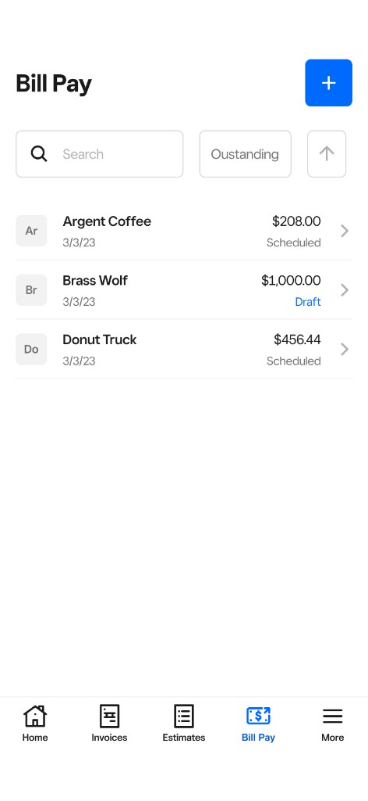
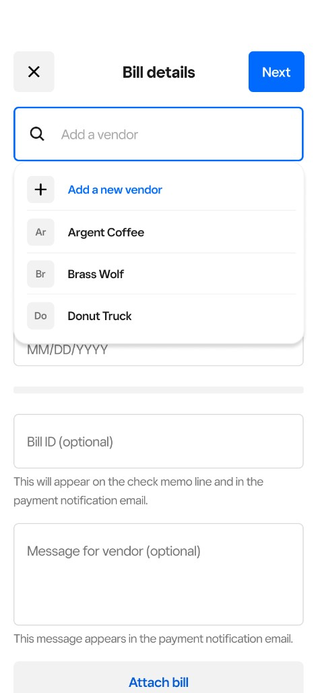
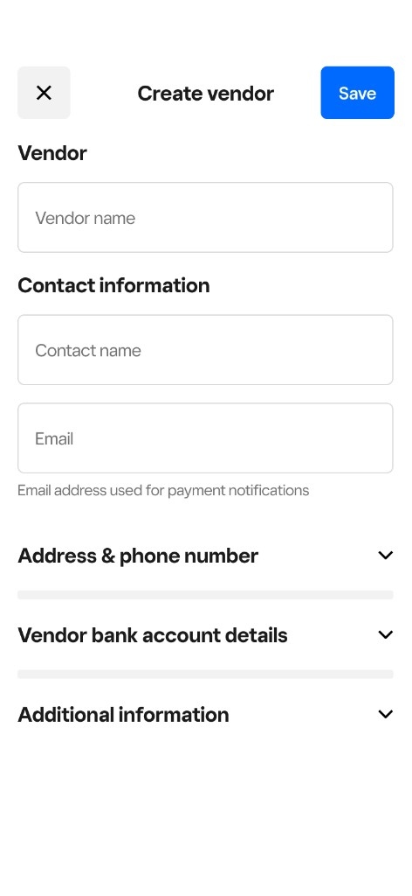
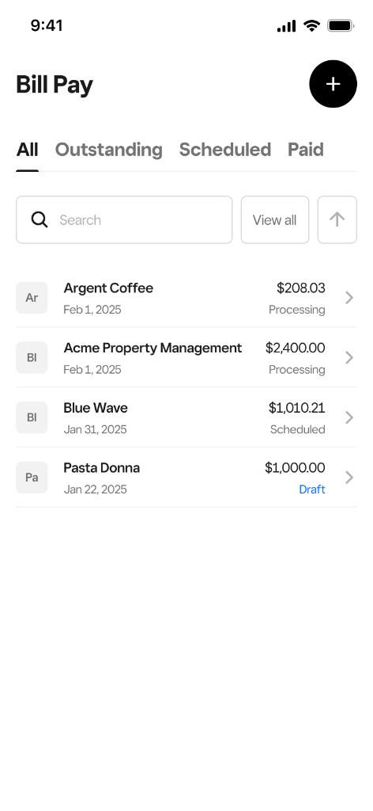
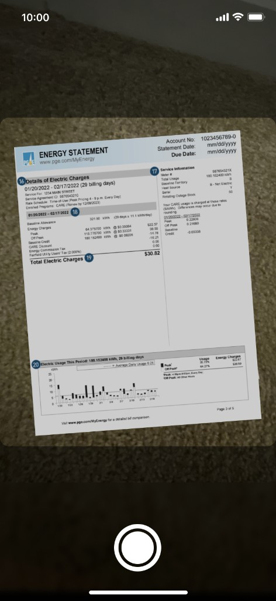
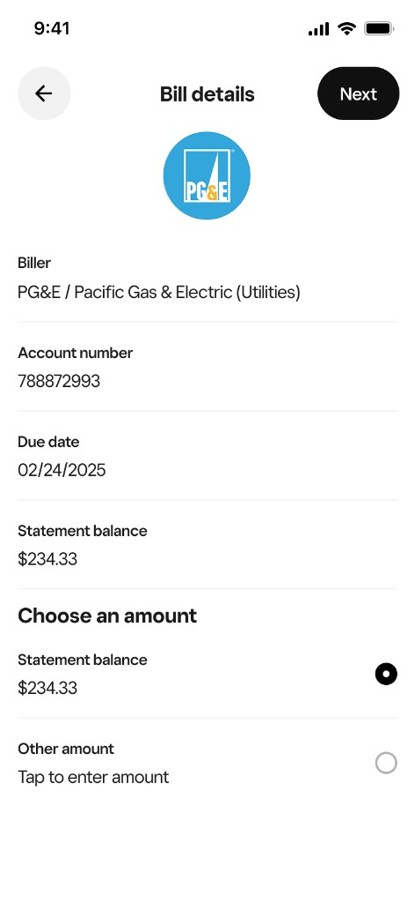
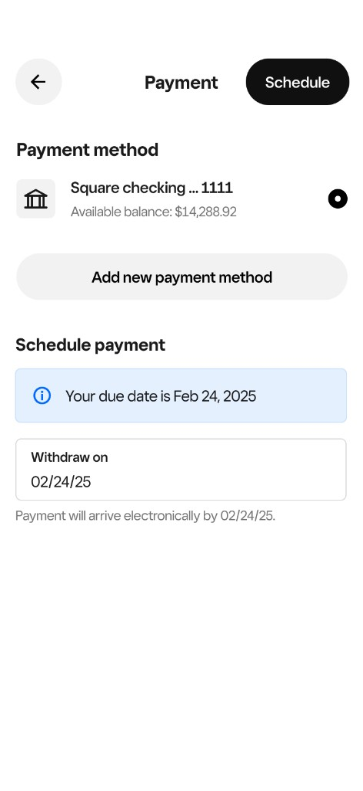
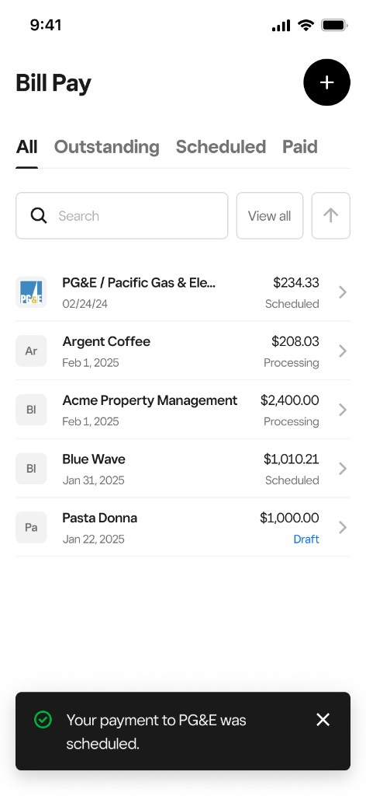

Square · Bill Pay · Biller Network
Increasing Bill Pay coverage by eliminating the cold start
Expanded how bills enter Bill Pay so sellers could pay more recurring expenses and grow payment volume across the Square ecosystem.
+~80%
Bill coverage
+23%
Payment volume
↑
Recurring bill adoption
2+ bills
Monthly retention signal

Impact
| Metric | Before | After |
|---|---|---|
| Bill coverage | Baseline | +~80% |
| Payment volume | Baseline | +23% |
| Recurring bill adoption | Limited | Expanded |
| Leading indicators | Completion · initiation | Connected bills · 2+ bills/month |
Payment volume was constrained by how bills entered Bill Pay. Expanding coverage and leading with seller intent unlocked recurring activity and moved Bill Pay toward a core accounts payable solution.
Situation
Square Bill Pay helps sellers manage outgoing business payments from the Square ecosystem.
Sellers could pay vendors and bills using Square Checking or card, with vendors receiving funds via ACH or mailed check. The broader vision was to make Square the place where sellers both earn money and manage money.
As adoption grew, a major limitation surfaced. Sellers came to Bill Pay for occasional invoices or one-off payments, but their highest-frequency bill relationships lived elsewhere. That capped adoption, reduced payment volume, and kept Bill Pay from becoming a core accounts payable solution.
Task
Understand why recurring bills stayed outside Square and what would make Bill Pay a primary bill management tool.
My responsibility was to identify adoption barriers and opportunities to improve recurring payment activity without adding complexity. We needed to answer three questions:
- Why were sellers leaving Square to pay bills?
- What would make Bill Pay feel like a primary bill management tool?
- How could we increase recurring payment activity without adding complexity?
Action
Three workstreams from research through integration alignment.
Discovery · Research and data
I partnered with PM to interview sellers and analyze behavioral data. 80% of recurring bills were being paid outside Square, including utilities, telecom, and insurance.
Sellers did not think of Bill Pay as a tool for individual payments. They expected a centralized hub for all business bills, but used it for one-off invoice payments instead. The experience was built around manual vendor setup, requiring full payee details before a payment could start.
Real-world behavior did not match the product. Sellers pay from paper bills, emails, or partial vendor information like a phone number. Bill Pay was not flexible enough to meet them where they were.
Strategy · Intent-first bill management
Research reframed the opportunity from improving manual bill entry to matching seller intent: paying from a billing statement, sending a payment to a vendor, or mailing a check.
Supporting larger billers required new integration models that could reduce biller setup and make a connected bill management vision possible. The strategy shifted from workflow optimization to bill coverage as the growth lever.
Alignment · Metrics and Paymentus integration
Metrics evolved alongside our understanding of the problem. Bill Pay initially focused on completion and initiation rates. Research revealed the real constraint was bill coverage, so we shifted leading indicators toward connected bills and recurring adoption. Sellers paying 2+ bills per month were less likely to churn. Payment volume remained the north star business metric.
I worked with product and engineering to evaluate API providers and integration approaches. We selected Paymentus as our biller network provider, but uncovered a usability challenge: out of the box, sellers had to manually enter multiple fields just to connect a bill.
Usability testing showed significant drop-off, especially among sellers adding several recurring bills. Time-to-complete would increase substantially without a different approach.
Exploration
Future vision for connected bill management beyond launch.
Once bills are connected, Bill Pay could help sellers anticipate and manage upcoming expenses:
- Know what's due and when across utilities, vendors, and subscriptions
- Track costs over time, including expenses from other Square products such as Payroll
- Receive proactive guidance through insights, reminders, and recommendations before balances are impacted
This vision informed near-term design priorities while keeping the team aligned on Bill Pay as a financial management surface, not a transactional add-on.
Design
From manual vendor setup to intent-first bill connection.
Before · Manual entry and cold start
Before the redesign, Bill Pay required sellers to build every payment from scratch. Adding a bill meant searching for a vendor, creating a new vendor profile, and filling in contact, address, and bank details before a payment could move forward. This cold start created friction, drop-off, and made recurring bill setup especially painful.



After · Intent-first bill connection
I advocated for an OCR-powered scanning experience that extracted key payment details directly from a bill document. Instead of starting with vendor fields, the experience started from intent.
- Bill Pay list view with a clear entry point to add a bill
- "How would you like to pay?" with paths to scan a bill, pay a vendor, or mail a check
- Bill scanning that extracted account details from a billing statement photo
- OCR transforming multi-step input into a single scanning action
This reduced cognitive load, shortened setup time, and aligned the experience with how sellers actually pay bills: starting from the bill itself.
End-to-end flow · Scan a bill to schedule payment





System Impact
Established patterns for connected bill management across Bill Pay.
- Intent-first onboarding model reused across bill connection flows
- Biller network integration framework via Paymentus for larger biller coverage
- Shared metrics language around connected bills and recurring adoption across product and growth teams
- OCR-assisted setup pattern applicable to other high-friction data entry workflows in Banking
Results
Coverage expanded, and recurring behavior followed.
Sellers who previously paid recurring bills outside Square began connecting utilities, telecom, insurance, and vendor relationships inside Bill Pay. Bill coverage increased by nearly 80%, recurring adoption expanded, and payment volume grew approximately 23%.
The shift from manual vendor setup to intent-led bill connection removed the cold start problem that had limited adoption. Sellers could start from the bill in their hand rather than reconstructing payee details from scratch.
Reflection
Payment volume follows bill coverage.
The key lesson was that payment volume was constrained by how bills and vendors entered Bill Pay, not by the payment flow itself. Sellers expected a hub. The product behaved like a manual payment tool.
Leading with seller intent removed the cold start issue of vendor setup and made it easier to pay bills with the information sellers already had. Pairing that with a powerful biller network API unlocked the coverage needed to drive recurring activity and long-term retention.